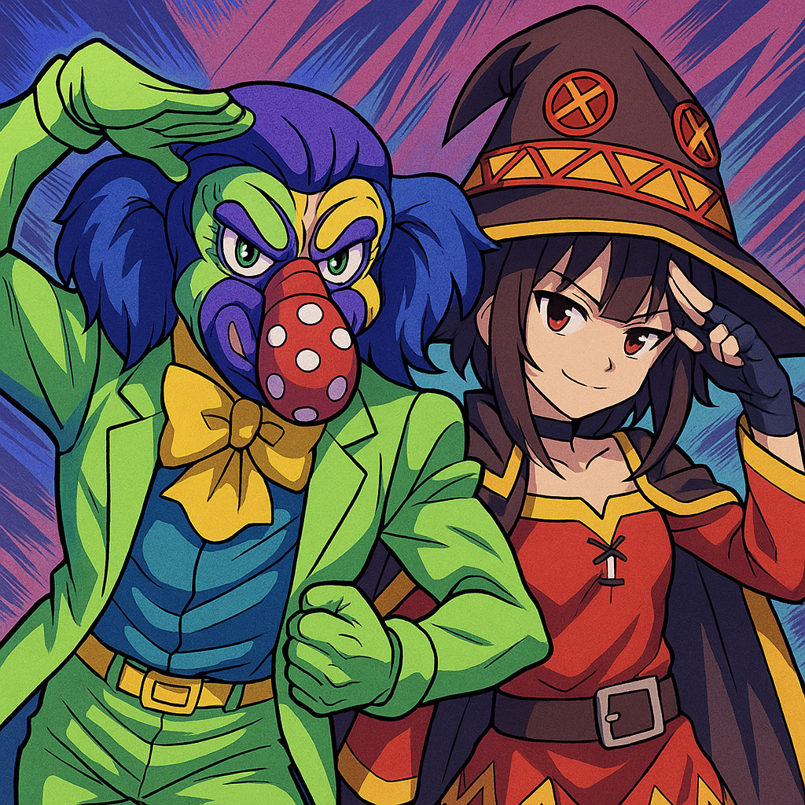

Barranquilla carnival:A celebration like no other. It's one of the most important festivals in Colombia. Although it only lasts a few days, the city prepares for months. When the parades begin, people dance and celebrate in the streets in colorful costumes. As you watch the cumbia dancers, you'll feel the rhythm in your heart. Because it's so lively, tourists from all over the world come to experience it. Even if it's your first time, you'll feel part of the tradition.
